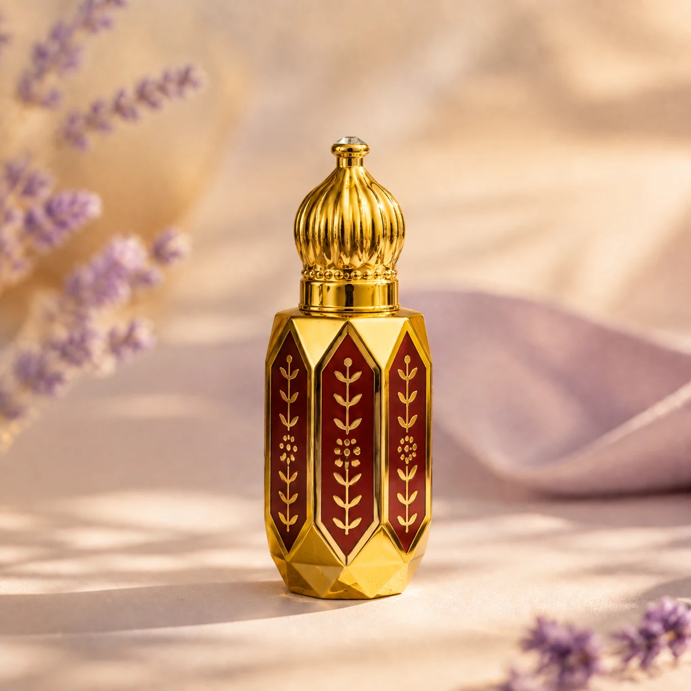
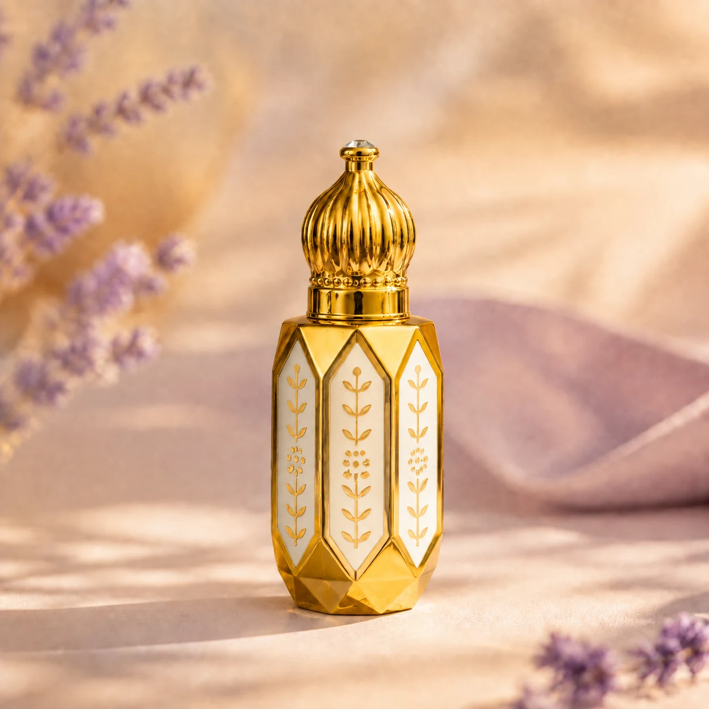
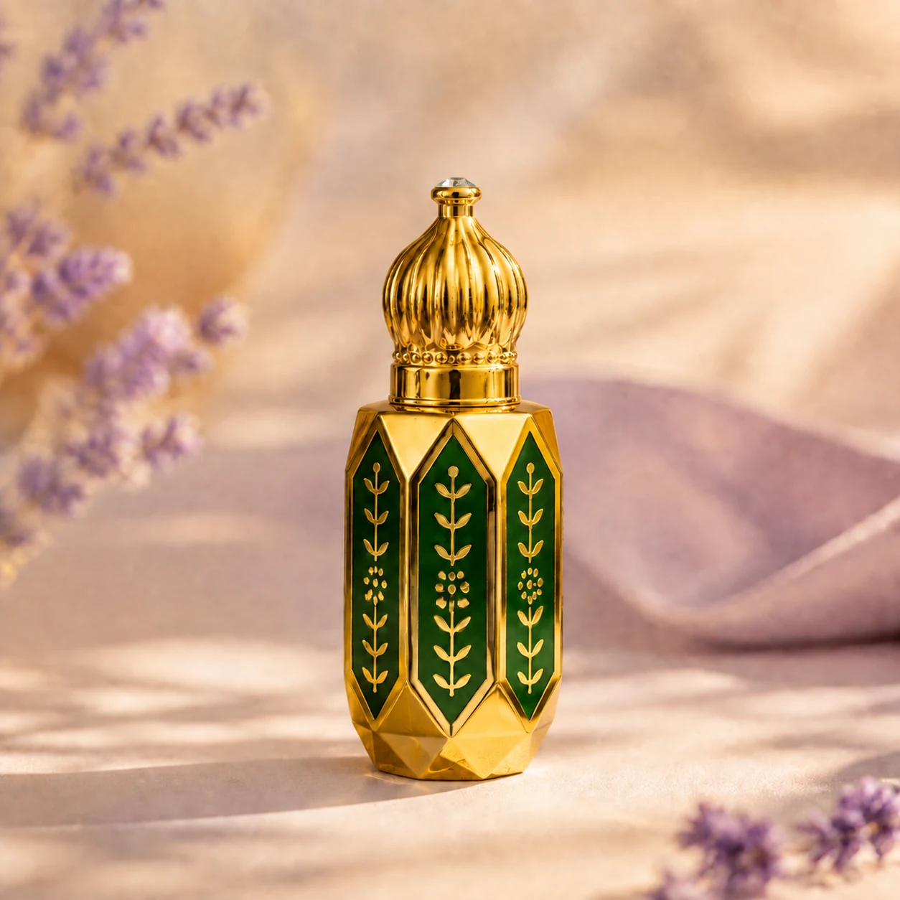
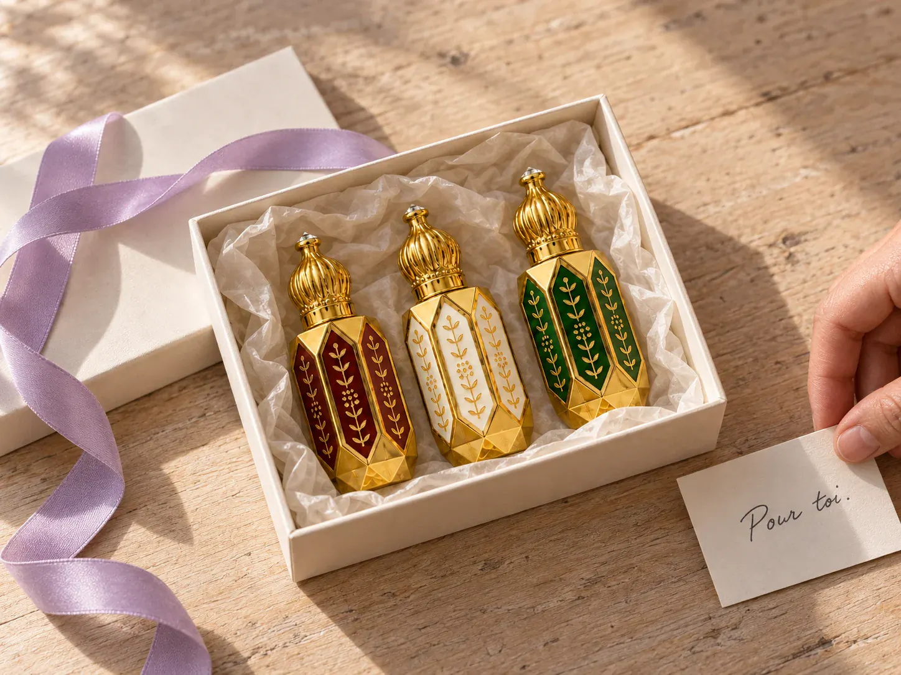

Un petit flacon. Votre façon de vous parfumer.

Le fruit, adouci par le musc.
Portrait olfactif proposéUne direction fruitée, vive au premier abord, puis plus ronde. La grenade et les fruits rouges donnent le ton ; le musc apporte une sensation plus douce. Un portrait à explorer si vous aimez les parfums gourmands qui gardent de la fraîcheur.
Une piste si vous aimez
Les fruits rouges, les parfums doux, une gourmandise légère.

Le parfum d’une présence discrète.
Portrait olfactif proposéUn registre musqué clair, doux et frais. L’idée d’un parfum qui accompagne la peau et se découvre de près. Une direction sobre pour celles et ceux qui aiment se parfumer sans rechercher un effet très sucré ou un bouquet opulent.
Une piste si vous aimez
Les senteurs propres, les parfums discrets, les gestes simples du quotidien.

Une attention fleurie, un nom à offrir.
Portrait olfactif proposéAroussa signifie « la mariée ». Ce nom appartient à la tradition des muscs offerts pour les noces. Son portrait explore un bouquet délicat sur un fond musqué : une piste pour qui aime les fleurs et les parfums qui accompagnent les occasions dont on se souvient.
Une piste si vous aimez
Les bouquets délicats et les muscs floraux.

Les trois, pour 20,99 €.
Trois flacons de 6 ml, trois envies à explorer. Le coffret revient 2,98 € moins cher que les trois muscs achetés séparément.
Découvrir le coffretUn parfum se découvre aussi sur la peau.
Ces portraits sont des propositions éditoriales documentées auprès de maisons de parfumerie. Ils doivent encore être rapprochés des essences du comptoir ; ils ne sont pas une liste d’ingrédients.
Pour l’application : une petite touche sur les poignets ou dans le cou, puis le temps de laisser le parfum se poser. Les trois muscs sont sans alcool et conditionnés à Aix-en-Provence.